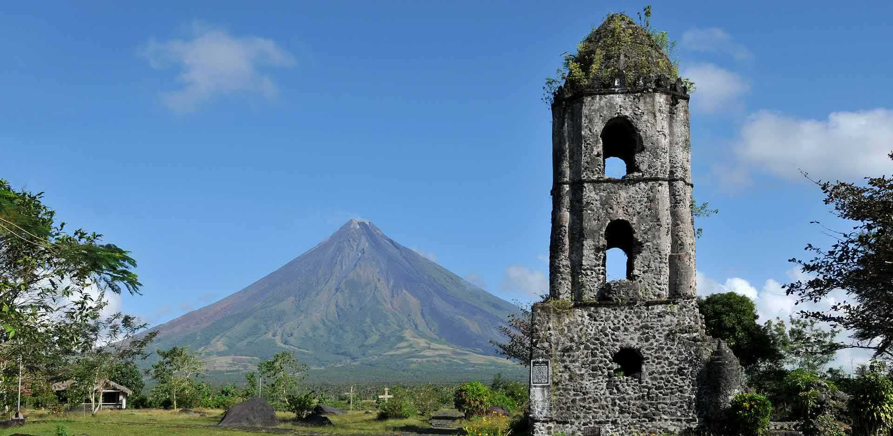

Bicol is a region in the Philippines
encompassing the southern part of Luzon Island and nearby island
provinces. Caramoan, a peninsula in the east, is dotted with caves,
limestone cliffs and white-sand beaches.

The Cebu Metropolitan Area or Metro Cebu
is the second largest metropolitan area in the Philippines (after Metro
Manila) with Cebu City as the main center of commerce, trade, education
and industry in the Visayas.
Palawan, officially the Province of Palawan,
is an archipelagic province of the Philippines that is located in the
region of Mimaropa. It is the largest province in the country in terms
of total area of 14,649.73 km². The capital city is
Puerto Princesa.
Isabela, officially the Province of
Isabela, is the second largest province in the Philippines in land
area located in the Cagayan Valley region. Its capital and the largest
local government unit is the city of Ilagan.